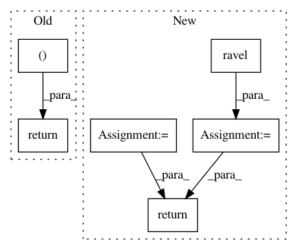

189749ef47d3d6459717b37abb90851d0c425e50,dipy/reconst/fwdti.py,,nlls_fit_tensor,#Any#Any#Any#Any#Any#Any#Any#Any#Any#Any#Any#,606
Before Change
np.array([Diso, 0, Diso, 0, 0, Diso]))),
-1) // Only free water
S0 = S0.reshape(data.shape[:-1])
return fw_params, S0
def lower_triangular_to_cholesky(tensor_elements):
Perfoms Cholesky decompostion of the diffusion tensor
After Change
-1)
else:
S0f = S0.copy()
S0f = S0f.ravel()
fw_params_p = fw_paramsc[~cond, :]
S0_p = S0f[~cond]
for vox in range(flat_data_p.shape[0]):
if np.all(flat_data_p[vox] == 0):
raise ValueError("The data in this voxel contains only zeros")
params = fw_params_p[vox]
// converting evals and evecs to diffusion tensor elements
evals = params[:3]
evecs = params[3:12].reshape((3, 3))
dt = lower_triangular(vec_val_vect(evecs, evals))
s0 = S0_p[vox]
// Cholesky decomposition if requested
if cholesky:
dt = lower_triangular_to_cholesky(dt)
// f transformation if requested
if f_transform:
f = np.arcsin(2*params[12] - 1) + np.pi/2
else:
f = params[12]
// Use the Levenberg-Marquardt algorithm wrapped in opt.leastsq
start_params = np.concatenate((dt, [-np.log(s0), f]), axis=0)
if jac:
this_tensor, status = opt.leastsq(_nlls_err_func, start_params[:8],
args=(design_matrix,
flat_data[vox],
Diso,
weighting,
sigma,
cholesky,
f_transform),
Dfun=_nlls_jacobian_func)
else:
this_tensor, status = opt.leastsq(_nlls_err_func, start_params[:8],
args=(design_matrix,
flat_data[vox],
Diso,
weighting,
sigma,
cholesky,
f_transform))
// Invert the cholesky decomposition if this was requested
if cholesky:
this_tensor[:6] = cholesky_to_lower_triangular(this_tensor[:6])
// Invert f transformation if this was requested
if f_transform:
this_tensor[7] = 0.5 * (1 + np.sin(this_tensor[7] - np.pi/2))
// The parameters are the evals and the evecs:
fw_params_p[vox, 12] = this_tensor[7]
S0_p[vox] = np.exp(-this_tensor[6])
evals, evecs = decompose_tensor(from_lower_triangular(this_tensor[:6]))
fw_params_p[vox, :3] = evals
fw_params_p[vox, 3:12] = evecs.ravel()
fw_paramsc[~cond, :] = fw_params_p
fw_paramsc[cond, 12] = 1 // Only free water
fw_paramsc = fw_paramsc.reshape((data.shape[:-1]) + (14,))
S0f[~cond] = S0_p
S0f[cond] = np.mean(data[cond, :] /
np.exp(np.dot(design_matrix[..., :6],
np.array([Diso, 0, Diso, 0, 0, Diso]))),
-1) // Only free water
S0f = S0f.reshape(data.shape[:-1])
return fw_paramsc, S0f
def lower_triangular_to_cholesky(tensor_elements):
Perfoms Cholesky decompostion of the diffusion tensor
In pattern: SUPERPATTERN
Frequency: 3
Non-data size: 6
Instances
Project Name: nipy/dipy
Commit Name: 189749ef47d3d6459717b37abb90851d0c425e50
Time: 2016-08-29
Author: rafaelnh21@gmail.com
File Name: dipy/reconst/fwdti.py
Class Name:
Method Name: nlls_fit_tensor
Project Name: uqfoundation/mystic
Commit Name: 5aa02316482e48940e1b79423b713337b4911fb7
Time: 2015-10-13
Author: mmckerns@968178ea-60bd-409e-af13-df8a517b6005
File Name: mystic/svmtools.py
Class Name:
Method Name: KernelMatrix
Project Name: befelix/safe_learning
Commit Name: 87a3f9e47cbe9f8786d2e3907c1bd6d769dcdd22
Time: 2016-09-29
Author: fberkenkamp@gmail.com
File Name: safe_rl/triangulation.py
Class Name: Delaunay
Method Name: gradient_at